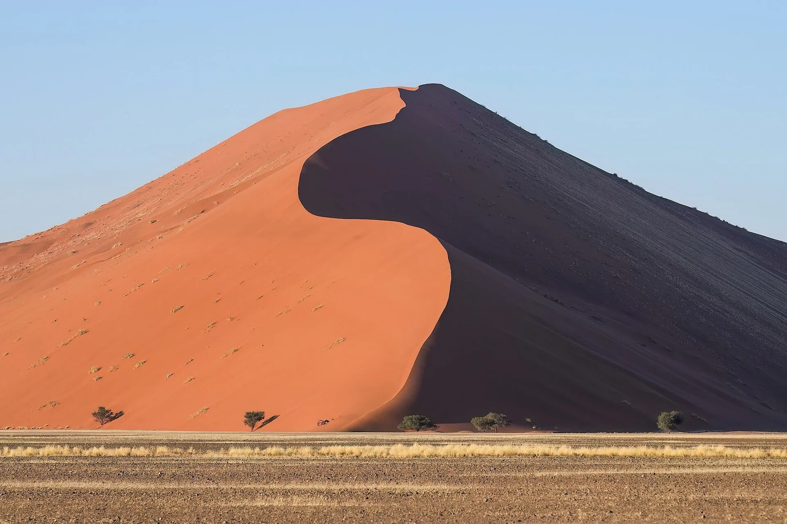
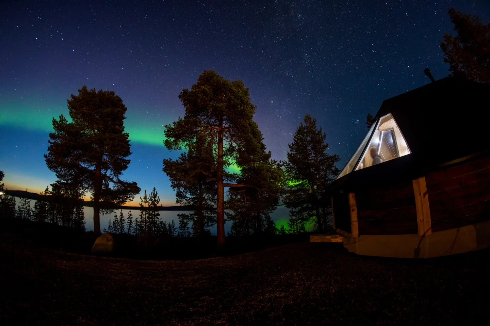
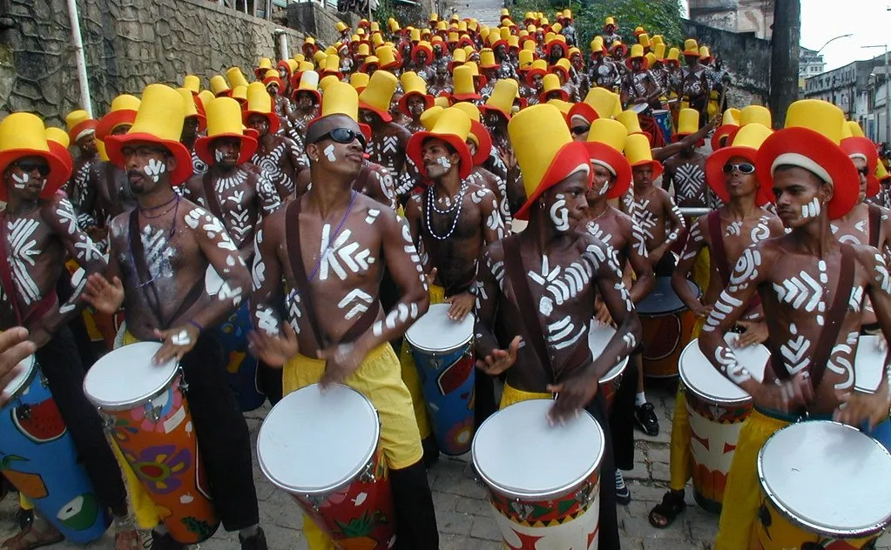

Descubrí dónde podemos llevarte
Once viajes en el calendario 2026 · 2027
 Octubre 2026
Octubre 2026Piemonte
Seis noches en una villa privada de Castiglione Tinella, en la línea que separa las Langhe del Monferrato, durante la semana de la trufa blanca.

Noviembre 2026Namibia
Diez noches por el desierto más antiguo del mundo, de las dunas de Sossusvlei a la fauna de Etosha.

Diciembre 2026Engadina
Siete noches en una casa engadina de Zuoz, entera para el grupo.
 Enero 2027
Enero 2027Laponia
Nueve noches por el norte del norte, de la Laponia finlandesa a los fiordos de Lyngen.

Febrero 2027Bahía
Ocho noches en la Bahía negra, del Pelourinho de Salvador a las playas del sur.
 Marzo 2027
Marzo 2027Japón
Once noches por el Japón de la flor que cae, de Tokio a las islas de arte del mar interior.
 Abril 2027
Abril 2027Bután y Nepal
Doce noches por el Himalaya budista, del valle de Kathmandu a los de Bután.
 Mayo 2027
Mayo 2027Marruecos
Nueve noches por el Marruecos de las ciudades imperiales, de Rabat a Marrakech, con el Alto Atlas en el medio.
 Junio 2027
Junio 2027Dalmacia
Ocho noches por las islas dálmatas a bordo de un catamarán tomado entero para el grupo, de Split a Dubrovnik.
 Julio 2027
Julio 2027Alaska
Diez noches por la Alaska salvaje, de los osos de Lake Clark a los glaciares del mar.
Uzbekistán
Diez noches por la Ruta de la Seda uzbeka, de Tashkent a Samarcanda.